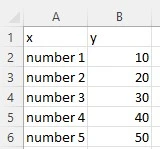
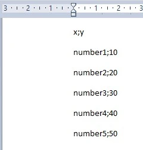

What is data visualization?
Data visualization is the visual presentation of data or information. The goal of data visualization is to
communicate data or information clearly and effectively to readers. Typically, data is visualized in the form of
a chart, infographic, diagram or map.
The field of data visualization combines both art and data science. While a data visualization can be creative
and pleasing to look at, it should also be functional in its visual communication of the data.
why use Data visualation
Data, especially a lot of data, can be difficult to wrap your head around. Data visualization can help both you
and your audience interpret and understand data.
Data visualizations often use elements of visual storytelling to communicate a message supported by the data.
There are many situations where you would want to prese
nt data visually.
Data visualization can be used for:
- Making data engaging and easily digestible
- Identifying trends and outliers within a set of data
- Telling a story found within the data
- Reinforcing an argument or opinion
- Highlighting the important parts of a set of data
CSV as data-source
Now we explained why Data interpration is so important we need a data source.
Today we have rolled out support for uploading Comma Separated Value (CSV) data files as a data source. CSV is
an incredibly universal format for data, and we’ve heard overwhelmingly from our users that an important
component to their business data has been locked up in these files.
We took our time building out this feature as it is a first step in providing upcoming support for other
people, and because we wanted to get the interface just right. I’d like to walk you through some of
the details of our implementation.
These files serve a number of different business purposes. They help people export a high volume of data to a
more concentrated database, for instance.
They also serve two other primary business functions:
CSV files are plain-text files, making them easier for the website developer to create
Since they're plain text, they're easier to import into a spreadsheet or another storage database, regardless
of
the specific software you're using
To better organize large amounts of data
How do I save CSV files?
Saving CSV files is relatively easy, you just need to know where to change the file type.
Under the "File name" section in the "Save As" tab, you can select "Save as type" and change it to "CSV (Comma
delimited) in our case the delimterd is ; or ,(*.csv). This has been chosen because numbers can have also
,.
Once that option is selected, you are on your way to quicker
and easier data organization.
saving from an excel file
- Open Excel with your values
- the top row are your headers
- fill in x values in the first column
- fill in y values in the second column (see example)
- save the file as csv (CSV UTF-8)

text editor
- Open pad with your values
- Use ; or , as split for your values
- the top row are your headers call them x and y
- fill in your values so it looks like the example down below
- save the file as unicode(Unicode-textdocument)

Now you how to save your data and the importantance of Data Visualization. It is time produce your Chart